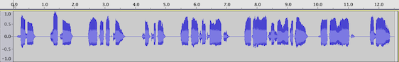

Wondering where to start? This page has inline executable code examples using the SoundManager 2 API.
If you're wondering how to include SM2 in your page, the basic template will get you started.
SM2's API features and behaviour can vary somewhat depending on client support, so it can be helpful to test under different configurations. The following are different configuration defaults for SoundManager 2. Clicking will change URL parameters and reload the page, causing SM2 to start up with the new options applied. Look at JS console output for details.
HTML5 options: HTML5-only mode (API default, where supported) | HTML5 + fast polling | HTML5 + prefer flash for MP3/MP4 formats | disable HTML5
Flash options: Flash 8 | Flash 9 (normal) | Flash 9 + highPerformance + fastPolling modes (higher JS callback frequency)
soundManager.setup() methodIn order to configure SoundManager 2 for use, you must first call the setup() method. The url property and an onready function callback are commonly used together here.
soundManager.setup({
// where to find the SWF files, if needed
url: '/path/to/swf-directory/',
onready: function() {
// SM2 has loaded, API ready to use e.g., createSound() etc.
},
ontimeout: function() {
// Uh-oh. No HTML5 support, SWF missing, Flash blocked or other issue
}
});
SoundManager processes the onready and ontimeout queue in the order items were added. You can also add callbacks via soundManager.onready() and soundManager.ontimeout(), respectively. If you add listeners for these events after SM2 has loaded, your callback will be fired immediately.
Keep in mind SoundManager's core methods (createSound, etc.) will not be available until soundManager's onready() event fires. The initialization time for SM2 can vary across browsers/platforms, and should effectively be assumed to be "asynchronous." Because of this, it is recommended you write your code to handle onready being fired either before or after window.onload().
If you wish to have SM2 always wait for window.onload() before calling onready() or ontimeout(), you can pass waitForWindowLoad: true to soundManager.setup().
SoundManager 2 has debug mode enabled by default and will write to agents supporting console.log-style debugging, and/or a custom <div> element in the absence of a console.
To disable debug output, pass debugMode: false to soundManager.setup().
Alternately, you may use the no-debug, minified version of the SM2 javascript library (which has internal debug code removed, and will silently return false.)
var mySound = soundManager.createSound({
url: '../mpc/audio/CHINA_1.mp3'
});
mySound.play();Creates a new sound object with a url, and calls its play() method.
Note: It is recommended you make one sound object per url, generally speaking, that you wish to play. Expressed another way: "Reduce, reuse, recycle."
idsoundManager.createSound({
id: 'mySound2',
url: '../mpc/audio/CHINA_1.mp3'
});
soundManager.play('mySound2');Creates a new sound object with the given id, and then calls soundManager.play(), specifying the id of the desired sound.
If omitted, an id will be automatically generated. If a sound object with the provided id already exists, the existing object will be returned.
Cases for providing your own id
The id parameter is optional, but makes sound objects easier to look up. It's also helpful when the object returned from createSound() wasn't stored, or isn't in scope. Calling soundManager.getSoundById('mySound2') will return the matching sound object, or null if none is found.
soundManager.play() and related convenience methods take an id string, and call the method on the given sound object. Thus, soundManager.play('foo') is functionally equivalent to soundManager.getSoundById('foo').play()
Reduce, reuse, recycle
Unless you need to track separate instances of a sound playing simultaneously, it's best to create and re-use one sound object for each unique sound resource (URL) you have. If you want to play a single sound multiple times, layered on top of itself in an overlapping/chorus style, look at the multiShot sound option (Flash 9 + HTML5 only).
onfinish event handler + play with volume argumentvar demo2Sound = soundManager.createSound({
url: '../mpc/audio/CHINA_1.mp3',
onfinish: function() {
soundManager._writeDebug(this.id + ' finished playing');
}
});
demo2Sound.play({
volume: 50
});
(creates, then plays a new sound - a function is called when the sound finishes playing)
onload event handlersoundManager.createSound({
url: '../mpc/audio/CHINA_1.mp3',
// callback for when the sound has loaded
onload: function() {
soundManager._writeDebug(this.id + ' loaded');
this.play();
}
}).load();This creates and loads a sound, using the onload event callback to begin playback once the sound has loaded.
whileloading event handlersoundManager.createSound({
url: 'http://freshly-ground.com/data/audio/mpc/20060826%20-%20Armstrong.mp3?rnd=' + Math.random(),
// begin loading right away
autoLoad: true,
whileloading: function() {
soundManager._writeDebug(this.id + ': loading ' + this.bytesLoaded + ' / ' + this.bytesTotal);
}
});This creates and auto-loads a sound, showing load progress where applicable.
idsoundManager.play('aDrumSound');This plays an existing sound made earlier using soundManager.createSound(), specifying an id parameter of aDrumSound.
Alternately, you can reference a sound by id and call methods directly on the object itself - for example, soundManager.getSoundById('aDrumSound').play();
onfinish, with multiShot (Flash 9 + HTML5 only)soundManager.play('aDrumSound', {
// allow onfinish() to fire for each "shot", instead of only last shot
multiShotEvents: true,
onfinish: function() {
soundManager.play('aCymbalSound');
}
});This will play an existing sound (created in-page), and uses the onfinish() callback to play a second, pre-existing sound.
Also note that the button can be clicked multiple times, and the sound will be "layered" as multiShot is enabled for both of these sounds when using Flash 9 or HTML5. An onfinish event will also fire as each sound finishes.
Bug/behaviour note: Whenever "play" is called on a SMSound object, any parameters passed in will apply to all currently-playing instances of the sound if multiShot is allowed. For example, the onfinish handler from demo 4a will apply to demo 3 if 4a is started while 3 is still playing.
* Multishot is Flash 9+ and HTML5 only.
onfinish()soundManager.createSound({
id: 'aBassDrum',
url: '../mpc/audio/AMB_BD_1.mp3',
multiShot: false,
// when the first sound finishes...
onfinish: function() {
// create and play the second.
soundManager.createSound({
id: 'aRimSound',
url: '../mpc/audio/AMB_RIM1.mp3'
}).play();
}
});
soundManager.play('aBassDrum');This will create and play a new sound, using the onfinish() callback to create and play a second, new sound.
Note that createSound() will return an existing sound object if one already exists with the given id. You can test this by running the demo more than once.
onfinish()-based)var s = soundManager.createSound({
id: 'hhCymbal',
url: '../mpc/audio/AMB_HHOP.mp3'
});
function loopSound(sound) {
sound.play({
onfinish: function() {
loopSound(sound);
}
});
}
loopSound(s);
Note that there are issues with seamlessly-looping sounds, it is "close, but not perfect" with Flash 8/9 at this point.
loops parameter method)var s = soundManager.createSound({
id: 'hhCymbal',
url: '../mpc/audio/AMB_HHOP.mp3'
});
s.play({
loops: 3
});
Looping is possible as shown above using Flash 9. With flash 8, the sound must be preloaded before looping can begin - eg. autoLoad: true, onload: function() { this.play{loops: 3} }. For tighter looping, see See Seamless Looping MP3 in Flash for further details.
HTML5 support note: Native HTML5 looping is infinite when enabled, and does not support arbitrary loop counts. For now, consider using your own function with onfinish() -> play() if you want to loop a sound a certain number of times. Refer to the above onfinish() example for a basic idea.
onPosition()var s = soundManager.getSoundById('aCymbalSound'); // existing sound object
// register some listeners (only do this once, they will work for subsequent plays)
if (typeof addedListeners === 'undefined') {
addedListeners = true;
s.onPosition(500, function(eventPosition) { // fire at 0.5 seconds
soundManager._writeDebug('Sound ' + this.id + ' has reached position ' + eventPosition);
});
s.onPosition(1000, function(eventPosition) { // fire at 1 second
soundManager._writeDebug('Sound ' + this.id + ' has reached position ' + eventPosition);
});
}
s.play({
multiShot: false,
whileplaying: function() {
// demo only: show sound position while playing, for context
soundManager._writeDebug('position = ' + this.position);
}
});
onPosition() allows you to add an event listener for a given time (in miliseconds, watching the position property); the event fires when that time has been reached while a sound is playing.
Note that for multiShot cases, the listeners will only fire for the original (first) shot because its position is the only one that is tracked within Flash.
onPosition() and clearOnPosition()var s = soundManager.getSoundById('aCymbalSound'); // existing sound object
// clear listeners from prior demo, if they were assigned...
if (typeof addedListeners !== 'undefined') {
soundManager._writeDebug('Removing previous demo listeners...');
s.clearOnPosition(500); // remove 500 msec listener
s.clearOnPosition(1000); // remove 1000 msec listener
}
s.onPosition(750, function(eventPosition) { // fire at 0.75 seconds
soundManager._writeDebug('Sound ' + this.id + ' has reached position ' + eventPosition);
// and now, remove the listener using the eventPosition specified in this callback
// so next time the sound plays, this listener will not fire
this.clearOnPosition(eventPosition);
});
s.play({
whileplaying: function() {
// demo only: show sound position while playing, for context
soundManager._writeDebug('position = ' + this.position);
},
onfinish: function() {
// when the sound finishes, play it once more to show that the listener does not fire.
soundManager._writeDebug('Playing once more, onPosition() should not fire');
this.play({
onfinish: function() {
soundManager._writeDebug('"' + this.id + '" finished.');
}
});
}
});
When onPosition() is used, a listener is added and a callback is fired when the sound reaches the desired position. To remove the listener, clearOnPosition() is called using the same position value.
from: and to: parametersvar spliceDemo = soundManager.createSound({
id: 'spliceSound',
url: '../mpc/audio/AMB_HHOP.mp3'
});
// optional: stop before re-starting sound (covers overlapping play attempts)
spliceDemo.stop();
spliceDemo.play({
// start position
from: 500,
// end position
to: 1200,
onstop: function() {
soundManager._writeDebug('sound stopped at position ' + this.position);
// note that the "to" target may be over-shot by 200+ msec, depending on polling and other factors.
}
});
By specifying "from" and "to" parameters to methods like play() and createSound(), you may play a sample (or segment) of audio from a larger file. An audio "sprite" of one file with many sounds is one way to think of this. Given timing accuracy of the "to" target may vary a lot, it is safest to have perhaps 500-msec gaps of silence between distinct sounds to ensure that no accidental overlaps occur.
To tighten the accuracy of the "to" timing, try using soundManager.useHighPerformance.
If HTML5 audio is being used, the sound should begin playing once a "canplay" event fires (after a connection has established), and the sound will then seek to the correct start position. When using flash, the whole audio file will be loaded before playback can begin.
Given limitations, Flash 9's multiShot (chorusing) mode does not apply here. If you wish to trigger a sound numerous times, call stop() before play() to reset the sound each time, or make multiple sound objects that reuse the same sprite.
from: and to: parameters
Portions of a sound can be played by specifying from and to when calling play(). This can be useful for performance, i.e., having an "audio sprite" that loads in a single HTTP request.
var fhDemo = soundManager.createSound({
url: 'http://freshly-ground.com/data/audio/sm2/fitter-happier-64kbps.mp3'
});
function playFromTo(nFrom, nTo) {
fhDemo.stop(); // optional: stop before re-starting sound (covers overlapping play attempts)
fhDemo.play({
from: nFrom,
to: nTo,
onstop: function() {
soundManager._writeDebug('sound stopped at position ' + this.position);
// note that the "to" target may be over-shot by 200+ msec, depending on polling and other factors.
}
});
}
function fitterHappier() {
playFromTo(128, 2100);
}
function moreProductive() {
playFromTo(2500, 3850);
}
function comfortable() {
playFromTo(4275, 5200);
}
function notDrinkingTooMuch() {
playFromTo(5500, 7250);
}
function regularExerciseAtTheGymThreeDaysAWeek() {
playFromTo(7500, 11500);
}
function atEase() {
// interesting edge case: flash may cut off sound near end.
// workarounds: use play({position:x}), or specify "to" time > duration eg. 99999.
playFromTo(11600, 99999);
}
// demo-specific hack: assign to the window object, so demo buttons work
window.fitterHappier = fitterHappier;
window.moreProductive = moreProductive;
window.comfortable = comfortable;
window.notDrinkingTooMuch = notDrinkingTooMuch;
window.regularExerciseAtTheGymThreeDaysAWeek = regularExerciseAtTheGymThreeDaysAWeek;
window.atEase = atEase;
// predefined/preloaded sound
var sound = soundManager.getSoundById('chinaCymbal');
// volume at 85%
sound.setVolume(85);
// 0.25 seconds into sound
sound.setPosition(250);
// pan 75% to the left
sound.setPan(-75);
// begin playback with new settings
sound.play();
This will set the position and pan of an existing, pre-loaded sound, then play it. Where applicable, these settings become the new defaults for the sound.
play() with sound optionsvar sound = soundManager.getSoundById('chinaCymbal');
sound.play({
volume: 100,
position: 0,
pan: 75
});This is an elegant way of playing a sound with specific parameters "just one time", overriding the defaults applied when the sound was created.
Note that if planning to layer sounds with multiShot (Flash 9 only), this variant method will give best results as each new "channel" is started with parameters.
If not passed a sound ID, soundManager.mute() will mute all existing and newly-created sounds. soundManager.unmute() can also be passed a sound ID, and performs the inverse either on a single sound or all sounds.
In this demo, all sounds are globally muted and unmuted a few times. Different parameters are used to help audibly separate the sounds.
soundManager.mute(); // mute all sounds
soundManager.createSound({
id: '880hz',
url: '../_mp3/880hz.mp3',
autoLoad: true,
onload: function() {
// soundManager.mute(); // mute all sounds
// play (muted) cymbal sound..
this.play({
volume: 75, // volume for when un-muted
pan: -75, // mostly on left channel
// .. and clean-up afterwards
onfinish: function() {
this.destruct();
}
});
this.setVolume(25); // new volume for when un-muted..
soundManager.play('s440hz', {
pan: 75,
onfinish: function() {
document.getElementById('btn-d5b').disabled = false;
}
});
// once playing, toggle all sounds some more
setTimeout(soundManager.unmute, 500);
setTimeout(soundManager.mute, 1000);
setTimeout(soundManager.unmute, 1500);
setTimeout(soundManager.mute, 2000);
setTimeout(soundManager.unmute, 2500);
}
});soundManager.createSound({
id: '880hz',
url: '../_mp3/880hz.mp3',
autoLoad: true,
onload: function() {
soundManager.mute('880hz'); // mute this - alternately, this.mute() would work here
soundManager.play('s440hz', { // play another sound to demo muting
onfinish: function() {
document.getElementById('btn-d5c').disabled = false;
}
});
// play 880hz (muted)..
this.play({
volume: 75,
// .. and clean-up afterwards
onfinish: function() {
this.destruct();
}
});
this.setVolume(50); // still muted, however..
// mute/unmute china cymbal some more
// mute sound calls: soundManager.mute('880hz'), or soundManager.getSoundById('880hz').mute();
setTimeout(this.unmute, 250);
setTimeout(this.mute, 500);
setTimeout(this.unmute, 750);
setTimeout(this.mute, 1000);
setTimeout(this.unmute, 1250);
}
});var foo = soundManager.createSound({
id: 'fooSound',
url: '../mpc/audio/AMB_BD_1.mp3'
});
// soundManager.play('fooSound');
// (Some time later on...)
// soundManager.unload('fooSound'); - release the loaded MP3
// soundManager.destroySound('fooSound'); - destroy the sound, freeing up memory etc. Also calls unload().
// Alternate (demo) approach, call methods directly on sound object itself:
foo.play({
onfinish: function() {
// once sound has loaded and played, unload and destroy it.
this.destruct(); // will also try to unload before destroying.
}
});var preload = soundManager.createSound({
id: 'preloadSound',
url: '../mpc/audio/AMB_HHOP.mp3'
});
// load the sound ahead of time
preload.load({
// and start playing it at onload
onload: function() {
this.play();
}
});
var bad = soundManager.createSound({
id: 'badSound',
url: 'badurl.mp3',
onload: function(bSuccess) {
soundManager._writeDebug('sound '+(bSuccess?'loaded!': 'did NOT load.'));
}
});
bad.play();
var s = soundManager.createSound({
url: '../mpc/audio/AMB_HHOP.mp3'
});
s.play();
s.destruct();
The Flash 9 version seems to resume the sound 1 msec earlier than it should, perhaps related to the timing/delay issue most noticeable on Windows.
var count = 0;
var pos = -1;
var s = soundManager.createSound({
url: '../mpc/audio/CHINA_1.mp3',
whileplaying: function() {
if (count == 0) {
if (this.position > 1000) {
this.pause();
pos = this.position;
count++;
this.resume();
}
} else if (count == 1) {
soundManager._writeDebug('old position: ' + pos);
soundManager._writeDebug('new position: ' + this.position);
// See that this.position is less than pos!
count++;
}
},
onfinish: function() {
this.destruct();
}
});
s.play();whileplaying() event assignmentNote that when using the Flash 9 version of SM2 with Flash 9 and 10 plugins, flash/OS-related delay conditions may result in the position property being less than the duration property, even by the end of the sound.
var foo = soundManager.createSound({
url: '../mpc/audio/CRASH_1.mp3'
});
foo.options.whileplaying = function() {
soundManager._writeDebug('whileplaying(): '+this.position+' / '+this.duration);
}
foo.play();
// note: assign .options before calling .play(), as that "bakes" the options into a play instance object.
// the below "late" event handler assignment will have no effect on the already-playing instance.
foo.options.onfinish = function() { soundManager._writeDebug(this.id + ' stopped.'); }
To work around a known "chipmunk" sampling rate issue with 48 KHz MP3s in Flash, one can apparently load a sound using Flash 9 with stream = false, and then call play() once the sound has fully-loaded. Exactly why this works is not known.
var fortyeight = soundManager.createSound({
url: 'http://freshly-ground.com/data/audio/48khz-test.mp3'
});
if (!fortyeight.loaded) {
// first time loading/playing
fortyeight.load({
stream: false,
onload: function() {
// sound has fully-loaded
this.play();
}
});
} else {
// sound has already loaded
fortyeight.play();
}
autoLoad:true + play() testcaseBug testcase (Flash 8 version-specific): creating a sound with autoLoad:true and immediately calling play() does not work.
var autoLoadTest = soundManager.createSound({
id: 'autoLoadTest',
url: getRandomMP3URL(),
onload: function() {
soundManager._writeDebug(this.id + ' loaded.');
},
onplay: function() {
soundManager._writeDebug('Starting sound: '+this.id);
},
autoPlay: false,
autoLoad: true,
stream: true
});
// autoLoadTest.play(); // sound will not start
setTimeout(autoLoadTest.play,1000); // may work with a delay?
Under Flash 8, this case does not work as expected. Even with the delay, the sound does not begin playing as soon as expected - sometimes it fires after the sound loads, in fact. For this reason, avoid using autoLoad:true if you intend to play the sound shortly after creating it when using Flash 8.
autoPlay + onfinish() testcaseBug testcase (Flash 8 version-specific): onfinish() does not fire with autoPlay:true
var sound = soundManager.createSound({
id: 'demo14',
url: '../mpc/audio/AMB_SN13.mp3',
onfinish: function() {
soundManager._writeDebug(this.id + ' finished (now destroying)');
// destroy this sound
this.destruct();
},
autoPlay: true,
multiShot: false
});
onstop() -> unload() testcaseBug testcase: unload() from onstop() does not work
var sound16 = soundManager.createSound({
id: 'demo15',
url: getRandomMP3URL(),
onstop: function() {
soundManager.unload(this.id);
},
onload: function() {
soundManager._writeDebug('loaded');
}
});
sound15.play();
setTimeout(sound15.stop, 1500);
Reporting the isBuffering property of a SMSound object
if (soundManager.flashVersion != 8) {
var sound16 = soundManager.createSound({
id: 'demo16',
url: getRandomMP3URL(),
onbufferchange: function() {
soundManager._writeDebug('Buffering '+(this.isBuffering?'started': 'stopped')+'.');
},
onload: function() {
soundManager._writeDebug(this.id + ' loaded.');
}
});
sound16.play();
}
Subject to browser support, a data: URI should work when provided to a native HTML5 Audio() instance.
You should not use this unless you know what you're doing and are willing to rely only on HTML5 support.
Additionally, data: URIs appear not to work on mobile devices (iOS: iPad, iPhone in particular.)
IE 9 + 10 do not support WAV under HTML5 Audio(). In addition to being the only major browser lacking .WAV support, irony is not lost on the fact that MSFT co-created the WAV/RIFF spec with IBM. (See yonder.)
if (soundManager.html5) {
soundManager.createSound({
// explicit type, SM2 doesn't detect MIME type in data: URIs yet
type: 'audio/wav',
// view source (or console) for the full URI.
url: getWaveDataURI()
}).play();
}See your JS console for live debug/log output.
soundManager.setup() (url, onready etc.)soundManager.play()play() with sound optionsonload() eventwhileloading() eventonfinish()onfinish()CreateSound() and play() with eventsmultiShotEventsloopsonbufferchange(), isBufferingonPosition()onPosition() + clearOnPosition()from + tofrom and to